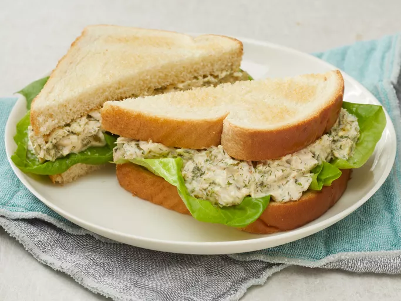

tuna sandwich

Descrption
The best tuna salad recipe with two secret ingredients: curry powder and Parmesan cheese! An odd combination but this makes a terrific tuna sandwich. I got this recipe from a friend who used it in her catering service business many years ago.
She used it for an appetizer with gourmet crackers. It has been my favorite recipe for tuna salad for many, many years.
Ingredients
- 2 slices of wheat bread
- 1 peice of white cheese
- 1 can of tuna (the one with tomato sauce is the best)
- some veggies (slices of tomato, of cucumber and lettuce)
Steps
- Cut slices of tomato and cucumber and lettuce ( wash them first)
- wipe the peice of cheese on a slice of bread
- add the veggies ( cucumber, tomato then lettuce)
- add the tuna
- close your sandwich with the other slice and bon appetit !